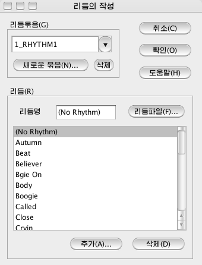
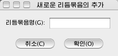
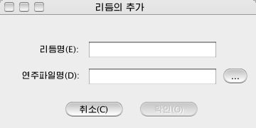

파일차림표\서고의 편집\리듬...
현재 사용중에 있는 리듬서고를 변경하거나
새로운 리듬묶음, 리듬파일을 추가, 삭제할수 있습니다.
<파일\서고의
편집\리듬...>을 선택하면 <리듬의 작성>대화창이 표시됩니다.

- 리듬묶음 : 변경작성하려는 리듬묶음을 선택합니다.
- 새로운 묶음 : 새로운 리듬묶음을 추가합니다. 이 단추를 누르면 <새로운 리듬묶음의 추가>대화창이 표시됩니다.

여기에
추가하려는 리듬묶음이름을 입력하고 <확인>단추를
누르면 리듬묶음목록에 추가된 리듬묶음이름이 표시됩니다.
- 삭제 : 이
단추를 누르면 리듬묶음목록에서 현재 선택되여있는 리듬묶음이름이 삭제됩니다.
- 리듬명 : 리듬목록에서 선택되여있는 리듬이름을 표시합니다. 이 입력창에서 건반으로 이름을 편집수정할수 있습니다.
- 리듬파일 : 선택된 리듬의 연주파일을 설정하는 단추입니다. 이 단추를 누르면 <리듬파일의 선택>대화창이 표시됩니다. 여기서 리듬파일이 들어있는 위치와
파일을 설정합니다.
- 추가 : 현재 선택된 리듬묶음에 새로운 리듬을 추가합니다. 이 단추를 누르면 <리듬의 추가>대화창이 표시됩니다.

- 여기서 리듬이름과 그의 연주파일을 설정하고
<확인>단추를 누르면 새로운 리듬이
추가됩니다.
- 삭제 : 이 단추를 누르면 리듬목록에서 현재 선택되여있는
리듬을 삭제합니다.
- <확인> : 이 단추를 누르면 리듬서고파일의 변경된 내용을
보관합니다.
- <취소>
: 이 단추를 누르면 리듬서고의 변경을 보관하지 않습니다.